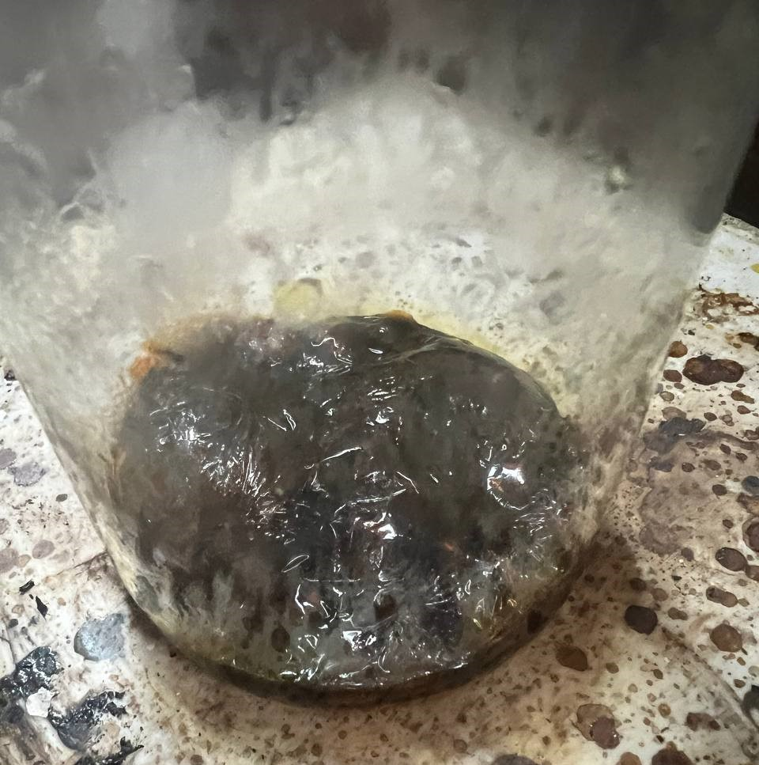
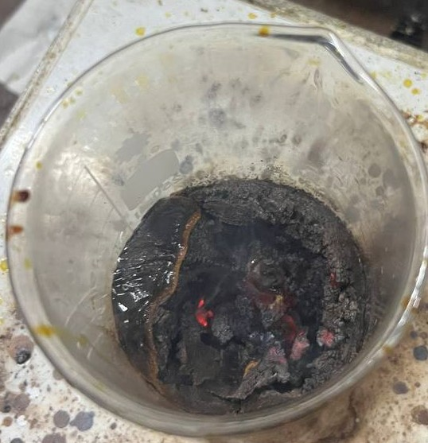
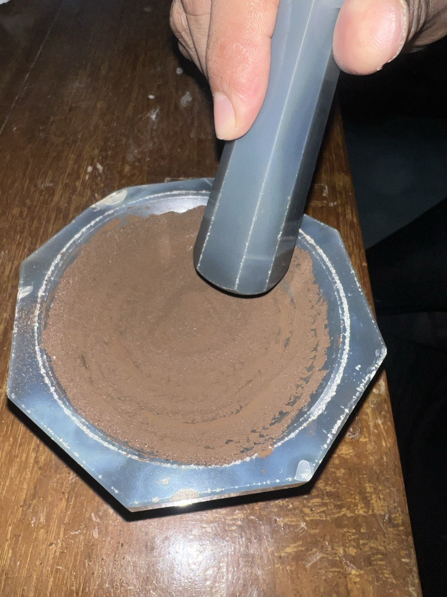
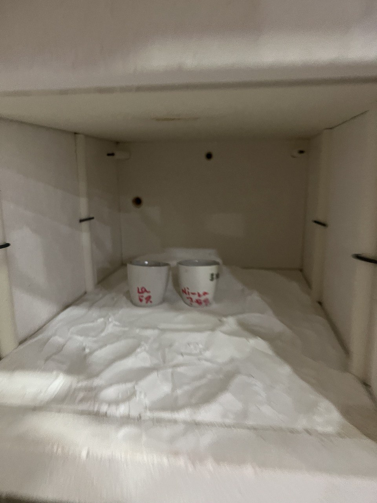
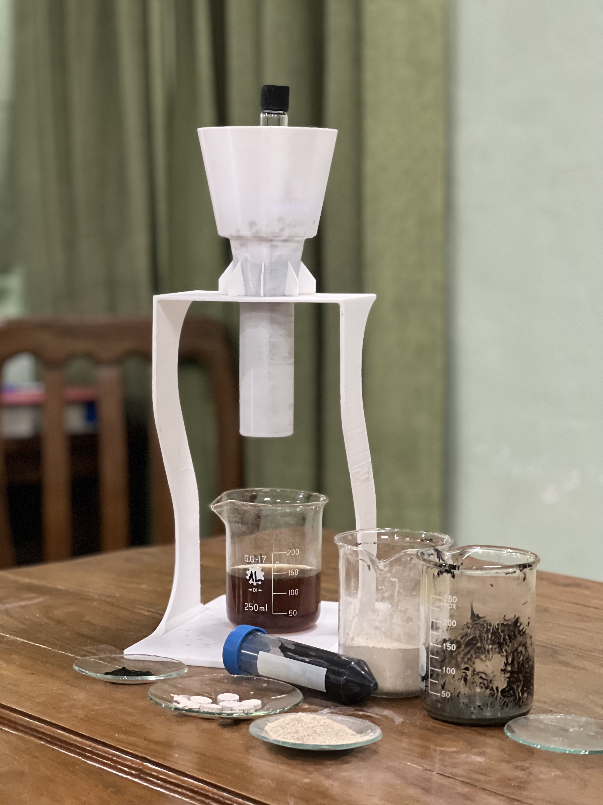

Synthesized La³⁺-doped NiFe₂O₄ nanoparticles using the citrate-gel method.
Characterized structural, morphological, and magnetic properties using XRD, SEM/EDX, and VSM.
Investigated the effect of La³⁺ substitution on crystallite size, saturation magnetization, and coercivity, establishing structure–property correlations.
Sol Formation and Magnetic Stirring

Viscous Gel Formation

AutocombustionEnding Stage of Gelation

Grinding via Mortar and Pestle

Sintering in the Furnace
Why did we choose adsorption-based method?
As (V) can be removed from water through various techniques such as coagulation and ion exchange processes. However, most of these methods are rather expensive for large-scale water treatment systems in remote and underdeveloped areas. Arsenic removal by adsorption has attracted enormous attention due to its easy operation, low cost, and little interference with water. Previous studies have shown that MgFe₂O₄ possesses excellent adsorption of arsenic because it is capable of forming special complexes with As (V), allowing As (V) to be efficiently adsorbed onto the surface of MgFe₂O₄. Furthermore, MgFe₂O₄ could be incorporated onto the surface of TiO₂ lattice, due to the same Pauli radius with TiO₂.
Background:
There are two main forms of arsenic in water: trivalent [As (III)] and pentavalent [As (V)]. Usually, As (III) is prevalent in anoxic conditions such as in groundwater and is in uncharged form in nature, whereas As (V) is thermodynamically stable in surface water. As (III) is reported to have a low adsorption performance to various adsorbents compared with that of As (V) while the toxicity of As (III) is about 25–60 times higher than that of As (V). So, a pretreatment for As (III) to the less toxic As (V) is usually required for adsorption processes. Many oxidants have been applied for oxidation of As (III) to As (V) including O₃, H₂O₂, MnO₂ and TiO₂/UV. The TiO₂/UV system was an effective and low-cost approach. Therefore, our MgFe₂O₄–TiO₂/UV system porous ceramic is designed to possess synergistic effect:
1. TiO₂ oxidizes toxic As (III) to less toxic As (V) - Photocatalytic Oxidation
2. MgFe₂O₄ adsorbs As (V)

3D Printed Filter Filled with MgFe₂O₄ – TiO₂ Porous Ceramic Synthesized by Solvothermal Method


{kind=link}
{kind=link}
{kind=link}
{kind=link}